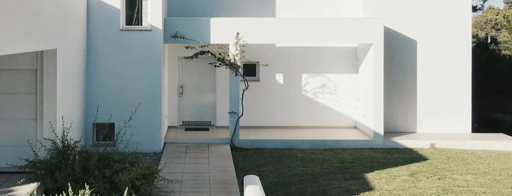

A whole yard run as one contract
Hardscape, shade, turf and boundary treated as a single levels and drainage plan instead of four contracts stacked end to end. The ground opens once, and nothing already paid for gets cut back into later.

Our work
Twenty-six scopes of work you can filter by build type — and a straight answer about why there are no case studies underneath them yet.
The Gallery is for looking. Photography arranged to be browsed quickly, with as little text in the way as possible, so you can decide in ten seconds whether the aesthetic is anywhere near yours.
This page is for checking. A project record is a specific piece of work at a specific property: what the site was like before, what constrained it, what was specified and why, what went wrong and what was done about it. That is a different kind of document from a photograph, and it is the one worth reading before you hand a stranger a gate code.
Which brings us to the part most contractor websites skip.
Published records
This is the honest state of it, written down rather than papered over with three case studies nobody could check.
No project on this website is described with a city, a date, a duration, a budget, a homeowner or a scope, because none of those facts has been verified for any individual job. Writing them anyway is the easiest paragraph on the internet to produce and the least worth reading.
Every photograph currently on this site is reference imagery. It illustrates the kind of space each page is describing. None of it is presented as a finished Arco job at a named address, and the alt text on each image describes what is actually in the frame rather than what the page is selling.
Three things, and the entry stays off this page until all three hold:
That is a smaller claim than the industry norm, and it is one you can audit in about a minute: read this website and count the specific completed projects it asserts. The answer is zero, on purpose. Anything else you find here — the sequencing arguments, the material trade-offs, the things we say we will not tell you on a web page — is written to be checked against what a contractor tells you in your own yard.
What we build
Each entry is a piece of work we build and a note on what actually decides it on site. None of them claims a completed job at an address — for that, see checking our work below.
Hardscape, shade, turf and boundary treated as a single levels and drainage plan instead of four contracts stacked end to end. The ground opens once, and nothing already paid for gets cut back into later.
Where the paving stops, where turf takes over and where water leaves the property are settled together before anything is excavated. Getting that boundary wrong is how a yard ends up with a wet corner nobody can fix afterwards.
Footings for a structure and the electrical, gas and water serving a cooking area are located and roughed in while the ground is still open. Reaching them later means lifting the surface that was laid over them.
Break out the existing surface, inspect what is underneath rather than assume it, then rebuild the base deeper and compact it in layers instead of one pass. A driveway fails from below, and that is where the money goes.
Two interfaces decide this one: the street, where the apron has to meet what the municipality allows, and the garage threshold, where the fall has to run away from the door rather than towards it.
Narrow runs are where setting out shows. Cuts land in the eyeline, edge restraint has less width to work with, and a pattern that reads well across a terrace can look wrong squeezed down the side of a house.
Format and scale are judged against the house, then colour is judged against heat, because a surface people cross barefoot in July is a comfort decision before it is a styling one. Furniture feet are the other quiet constraint.
Judged on how it behaves wet, how it takes pool chemistry, and whether it sheds water outward rather than back towards the water. No surface is slip-proof, so the question is what changes traction, not which product claims to have solved it.
The threshold height sets the finished level, the finished level sets the fall, and the fall has to run away from the house. Sightlines from indoors decide the rest — most of the year this surface is looked at through glass rather than stood on.
The cage stays, which constrains everything: how material gets in, where a cut can be made, how a machine reaches the middle. It is a different job from the same area in open air, and it should be priced as one.
Shade is bought in hours, not square feet. Which way the space faces and when you actually want to use it decide the structure, its position and its roof type — and the footings land in the paving, so the two are one decision.
First question is whether to overlay or take it out, and the coping line usually answers it. Second question is who else is involved, because we build decks and we are not pool contractors — that gets said at the start, not halfway through.
A fence is not automatically a pool barrier. What applies is specific to the property, so it gets confirmed for your address rather than asserted on a web page, and the enclosure is specified against that answer instead of around it.
Everything expensive about an outdoor kitchen is underground. The counter footprint is a paving decision, the rough-in happens while the ground is open, and both are fixed before a single slab is set.
Hot zone, prep zone, cold and storage, serving and seating — then the route from the indoor kitchen traced end to end, because the plates have to travel it. Layout is settled before appliances are, not after.
Cover is what decides how often an outdoor kitchen is actually used, and it changes the specification: ventilation has to be planned where there is a roof, and cabinetry has to be built for outside rather than moved outside.
Open frame, fixed slats, adjustable louvres or fabric — each removes a different amount of sun, and the choice follows the hours you want back. We will not quote a wind rating on a web page; that belongs to a specific product with documentation behind it.
Position is the decision that cannot be revisited once the footings are in: distance from the water, distance from the house, where the sun comes from, and what the structure is seen against from indoors.
Footings before paving, the surface underneath chosen for what happens beneath a roof, and power and light run while the trenches are open. Requirements can vary by jurisdiction and project scope. Arco can discuss planning considerations for your specific project.
Organic material comes out, an aggregate base goes in and is compacted, and the whole thing is graded for fall rather than for flat. Most turf disappointments were decided at this stage, before the turf itself arrived.
The narrow strip between house and boundary is a strong candidate, because it gets too little light for grass and too much traffic for planting. How the turf meets the boundary is what makes it look deliberate rather than patched.
The base matters more here than anywhere else, and anchoring is specified differently where a dog is involved. Tell us about the animals at the site visit — it changes the build, and the maintenance routine gets stated plainly rather than glossed.
Where the line actually runs, what governs it, and what is buried along it are established before any post is set — which is why the sequence starts with walking it together and includes utility locating, not a quote from a satellite image.
Privacy is a geometry problem — the height that blocks a neighbour's second-floor window is not the height that blocks their patio. Screening the one thing you actually want gone is usually cheaper and always looks less defensive.
Sizes are rarely uniform in a house that has been altered, so each opening is measured and specified against product documentation with numbers on it. Approvals belong to products, not to categories — ask for the document, not the adjective.
This is where the openings meet the outdoor work. How much comes out, what the wall is built of, and how the finish is made good on both faces decide the job — and the threshold detail ties straight back into the terrace level outside it.
Nothing matches that filter. .
The standard
Publishing the template before the records is deliberate. It fixes the standard while there is nothing to be tempted into bending it for, and it lets you hold the finished article to it.
What was there, what it was doing wrong, and what the ground was like underneath. Photographs taken before work started, not a rendering of the intention.
Access, levels, drainage, existing structures, trees, association guidelines, and the approvals that applied to that property. The constraints are the interesting part; a record without them is a brochure.
Which of the eleven build types were in the contract, in what sequence, and what was explicitly excluded. Exclusions are recorded, because they are the part every dispute is actually about.
What was specified, what it was chosen against — heat, traction, load, exposure — and what was rejected on the way. Named products only where we can point at the documentation.
Every project of any size has a moment. A record that does not contain one has been edited into fiction, so this section is required, not optional, and it says what was done about it.
Our own photography of the finished work at that property, from angles that include the awkward junctions rather than only the flattering ones.
City rather than street by default, reduced further on request, and omitted entirely if that is what it takes to publish with consent. No addresses, no names, no dates that identify a household.
Because a standard that only exists internally is a standard that quietly relaxes. This one is written into the project specification that governs this website, and it applies to the first record as much as the fiftieth. If a future entry on this page is missing a section above, it has failed its own test — and you can see that from the outside.
Due diligence
Including this one. None of what follows depends on trusting a website, which is rather the point of putting it on a website.
Photographs travel. A street you can drive past does not. Ask for completed work you can look at from the sidewalk, and for references you can telephone — then telephone them.
A finished project shows you the taste. An open excavation shows you the base, the compaction, the drainage and how tidy the crew keeps a site — which is what you are actually buying.
Ours is CBC1269393. Florida licences are searchable through the state's Department of Business and Professional Regulation, and it takes about a minute to confirm a number, its status and who holds it.
Request it from the insurer or agent rather than as a forwarded image, and check that the dates cover your project and that the coverage matches the work being done.
Two quotes that differ by thousands usually differ by base depth, excavation, drainage or edge restraint. Compare what is written under the number, or you are comparing nothing.
A contractor who answers that question quickly and specifically has thought about the job. A vague answer here is more informative than any gallery, on any website.
Ask and we will put together what is available at the time — references you can call, a site you can walk, or a completed property whose owner is happy to have visitors. What we will not do is publish a list of addresses on a public page. The people who live at those addresses did not sign up to be part of our advertising, and a contractor who treats their privacy casually will treat yours the same way.
Areas we serve
Before you enquire
Because a case study is a factual claim about a specific property, and we do not have verified records to publish yet. Writing one would mean inventing a city, a date, a scope and a homeowner. Rather than do that, this page publishes the standard a record has to meet before it appears, and lists the scopes of work we actually build. If you want evidence of work before you commit, ask for it directly.
The Gallery is for looking — photography arranged to be browsed quickly, with as little text in the way as possible. Projects is for checking: a specific piece of work at a specific property, with the scope, the site constraints, the materials and the outcome written down. One is a visual impression; the other is documentation. They are kept apart so neither is mistaken for the other.
They are reference imagery. They illustrate the kind of space each page describes, and none is presented as a finished Arco job at a named address — the alt text on every image describes what is actually in the frame. When we publish our own project photography it will be labelled as such, tied to a written record, and published with the homeowner's agreement.
Ask, and we will arrange what we can. Depending on what is running at the time that can mean references you can call, a job in progress you can walk, or a completed property whose owner is willing to have visitors. What we will not do is print a list of addresses on a public page.
Only if you agree to it in writing, and you are free to say no without it affecting anything. Nothing is published from a job by default. If you do agree, you decide how much identifies the property — most records are written to the level of the city rather than the street, and that can be reduced further.
No. The filters describe build types, not the way work is packaged. Plenty of projects are a single scope — one driveway, one fence line — and plenty of others combine five categories into one contract with one levels plan and one schedule. Filter to find the scope you are thinking about, not to work out how it would be quoted.
References, a site you can walk, the licence number to check and a proposal written in scope rather than adjectives. Start with a visit to your property.